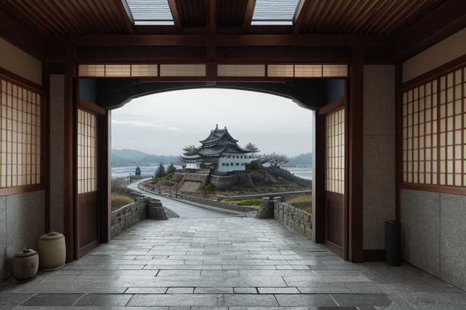
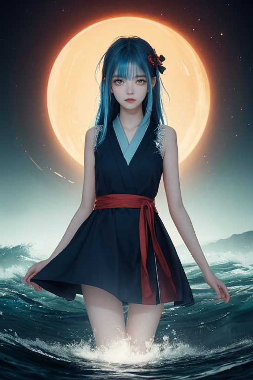
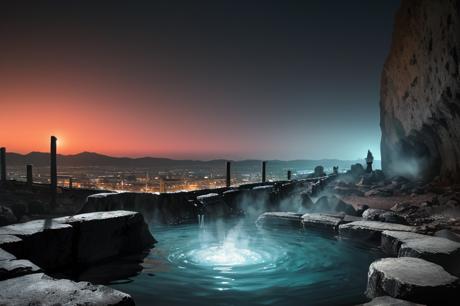
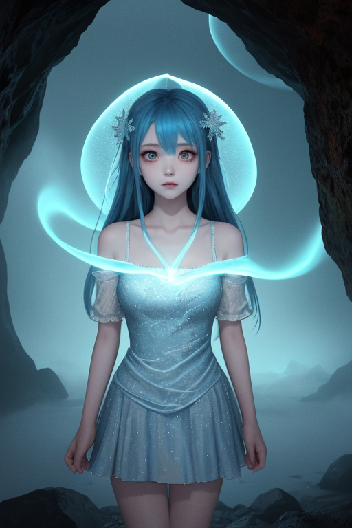
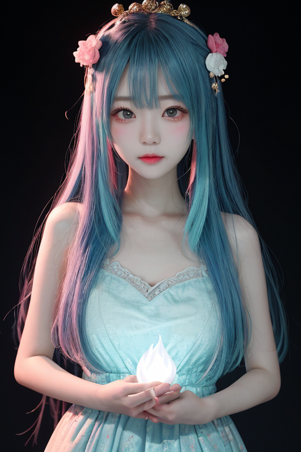

第一章 現実の兵庫
あなたはまだ気づいていない。この土地にも、王がいることを。
姫路城の白亜の天守が、春霞の中に浮かぶ。その優美な姿の下には、幾重にも重なる石垣の「歪み」が、静かに、しかし確かに蓄積されている。城は震災をくぐり抜け、今もそこに立つ。それは強さの証ではなく、無数の微調整の結果だ。
神戸港には、巨大なクレーンが並ぶ。埠頭を洗う波の音は規則的だが、その水面下では、プレートの境界が複雑に絡み合い、巨大なエネルギーが封じ込められている。港は開かれているが、その底には「封印」がある。異人館の街並みを歩けば、異国の文化と和の文化が交差した痕跡が、レンガと瓦に刻まれている。そばめしの焦げた香り、灘の酒蔵から漂う麹の甘い匂い。それらすべての日常の隙間に、目に見えない「調整」の痕跡が滲んでいる。
この土地は、交差点だ。海と陸、異国と日本、過去の災害と現在の平穏。そして、そのすべての交差点上に、ひとつの問いが置かれている。交差点で、何を選ぶのか。

第二章 歪みの兆候
神戸港の波は、今日も静かだった。しかし、交差王ヒョウゴリア・クロスには、その水面の下で、何かが蠢いているのが感じられた。一九九五年のあの日、この港は大きな歪みを受け止めた。妖精クロッサが港円の結界を何重にも張り、コウベリアが異国から来る波の衝撃を和らげてきた。その封印が、ほんのわずか、緩み始めている。
有馬温泉の湯煙の向こう、淡路島の方向から、かすかな地鳴りが伝わる。それは物理的な地震ではない。過去の大震災の記憶が、土地そのものに染み込んだ「痕跡の振動」だ。妖精たちの報告は一致する。複数の世界線が、この兵庫という交差点で、以前よりも強く干渉し始めている。封印線が引き裂かれ、港が本来の力を解放する時、何が起きるのか。
王は姫路城の白亜の天守を仰ぎ見た。あの優美な曲線は、数百年にわたる地震の衝撃を巧みに分散させる構造だ。自分たちの調整も、あの城のように、力を逸らし、受け流すことしかできないのか。それとも、この交差点で、より能動的な「選択」を迫られる時が来ているのか。葛藤が、青と赤の紋章の奥で静かに渦を巻いた。

第三章 王の葛藤
有馬温泉の奥、金泉が湧き出る岩陰で、王は己の紋章を凝視していた。青は静謐な海、赤は奔る血潮。二色は混ざり合わず、鋭く交差している。封印線は、この交差点に張られた結界だ。神戸港の底に眠る「歪みの交点」を封じ、阪神・淡路大震災の衝撃を、あの日、ぎりぎりまで緩和した代償であった。
「解放すれば、港は本来の『交差点』として機能し始めます。異国の波も、内なる波も、より自由に行き来するでしょう」とクロッサが囁く。「しかし、制御を失うリスクは計り知れません」とコウベリアが続ける。二つの声は、王の内なる葛藤そのものだった。
淡路島から届く微かな地鳴り。歪みは増幅しつつある。封印を強化し、静謐を保つか。封印を解き、港の力を以て新たな均衡を図るか。王は、震災の記憶を背負った街並みを見下ろした。交差点に立つとは、どちらを選んでも失うものがあると知ることだ。彼はそっと目を閉じ、灘の酒のように澱んだ、苦い選択の時を待った。

第四章 封印の記憶
有馬温泉の奥、人知れぬ岩窟にて、王は二つの妖精と向き合った。湯気がゆらめく闇に、クロッサの声が静かに響く。
「この封印は、選択の放棄です」彼女は、岩壁に刻まれた青と赤の紋章に触れた。「一九九五年、港は悲鳴を上げた。あまりに多くの衝突、あまりに大きな歪み。王は、港そのものの力を『選択』から切り離し、封じた。交差点で、一つの道を閉ざすことも、選択なのです」
コウベリアが湯煙の向こうから言葉を継ぐ。「しかし、封じられた力は消えません。淡路島の地鳴りは、その証。港は開かれ、交差し、時に衝突するためにある。封印は静謐をもたらしたが、それは均衡ではなく、凍結に近い」
王は掌を開いた。片手には姫路城の白亜の静寂、片手には神戸港の波のざわめきが映る。妖精たちの言葉は、彼自身の内なる対話だった。強化か、解放か。過去の安定か、未来のリスクを伴う可能性か。
岩窟の奥底から、かすかな波音が聞こえる。封印の向こうで、港が眠りから覚めようとしている。

第五章 微調整と余韻
王は、岩窟の奥に手を伸ばした。掌が触れたのは、冷たい石の壁ではなく、目に見えぬ境界の膜だった。封印そのものだ。彼は力を込めず、ただ微かにその表面をなぞった。ヒビの入ったガラスの継ぎ目を、慎重に撫でるように。震災の記憶が、港のざわめきが、異国の波の香りが、彼の指先を通じて流れ込む。すべてを封じ込めることは、この土地の本質への背信だ。かといって、無造作に解けば、過去の衝突が再燃する。
彼は選んだ。封印を破棄せず、強化もしない。わずかに透過性を増す、微調整を。港の記憶は完全には解き放たれず、かすかな潮風として、神戸の街に、時に明石焼きの香りに混じり、時に灘の酒蔵の空気に紛れて、ほんの少しだけ流れ出すように。衝突のエネルギーは消えないが、その軋みが新たな交差点を生むための、かすかな振動へと変容する。
王は岩窟を後にした。有馬の湯気の向こうに、淡路島の輪郭がかすむ。彼の胸には、修復の代償として、解きほぐせない葛藤の澱が残った。最適解などない。あるのは、選び続けることだけだ。
あなたの町にも、王がいる。